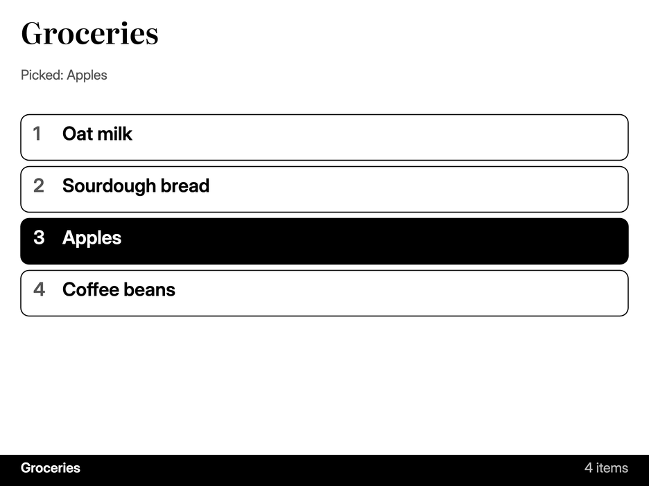
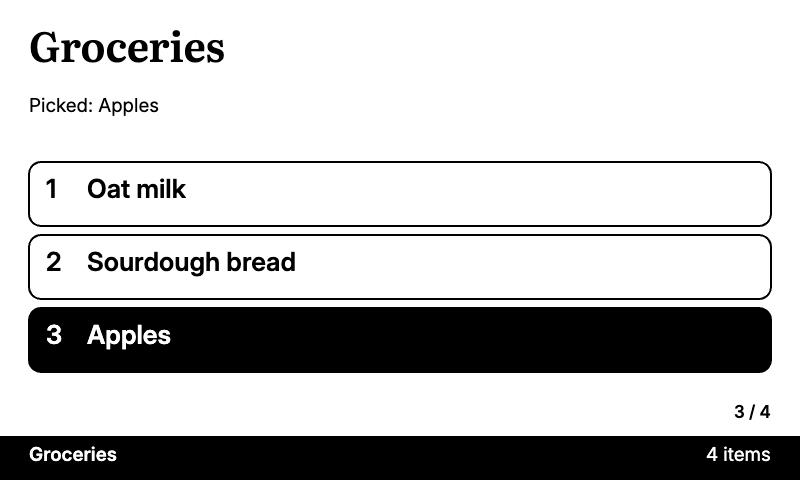

| TRMNL X | TRMNL OG | |
|---|---|---|
| Screen | 1872 × 1404, 16 grays | 800 × 480, black and white |
| 1 pt | 3 px | 1.45 px |
| Input | touchbar | one button |
| Memory for an app | 512 KB | 256 KB |
Components size themselves in points, so the same code fits both screens. On the OG, grays 0-7 show as black and 8-15 as white.


The same Groceries app on both devices.
See Also
A
Handling input with focus
How Next, Prev and Select reach your views on a touchbar and on a single button.
A
Building your first app
Write an app, build it to WebAssembly, and run it on a simulated TRMNL.